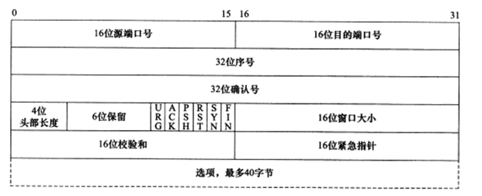
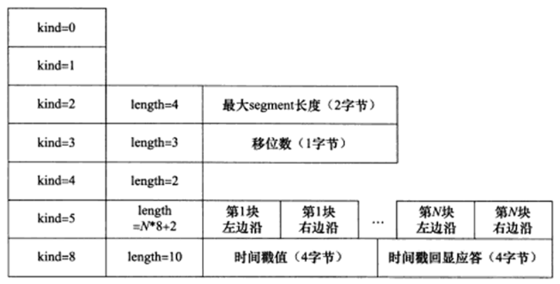
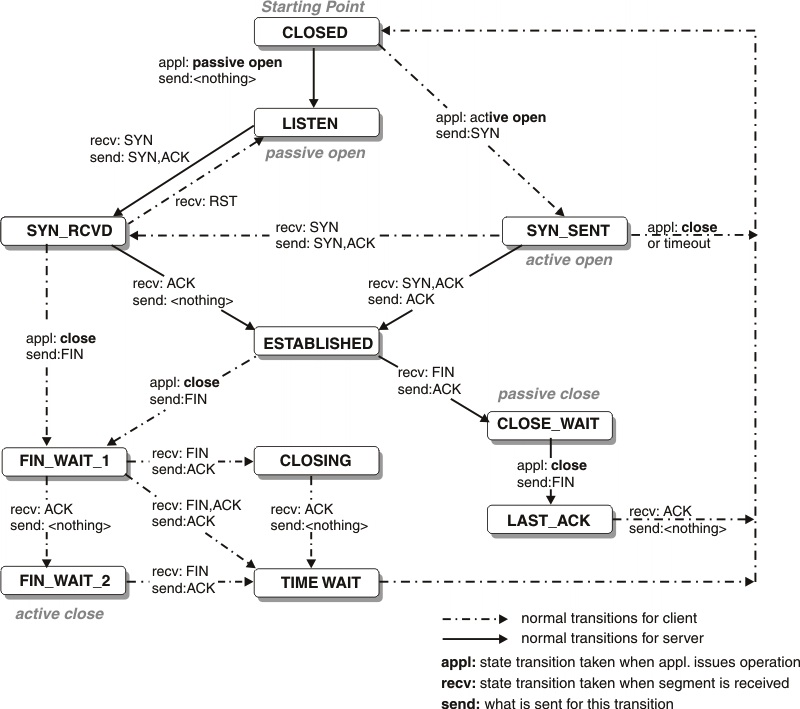
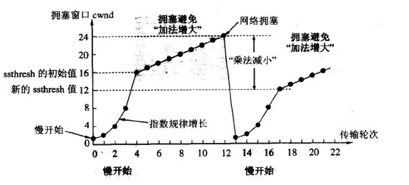
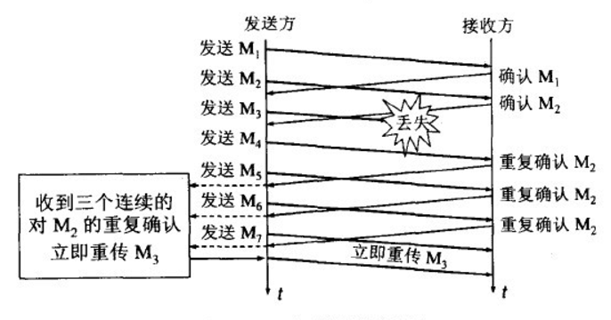
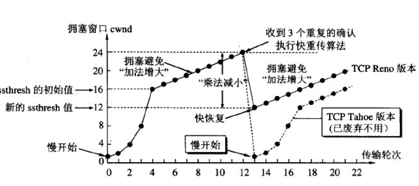
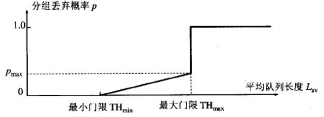
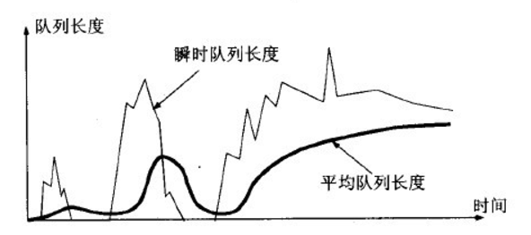

- 面向连接，一对一，所以基于广播和多播的应用程序不能使用TCP服务。而无连接的UDP则非常适合广播和多播。
- 字节流，TCP 字节流，send()写recv()读次数没有固定关系，UDP 数据报，sendto()写recvfrom()读次数相同。
- 可靠传输。
传输层-Segment, 网络层-Packet, 链路层-Frame
TCP HEADER

- 32位序号sequence number, ISN + byte offset of the first byte in the packet
- ISN initial sequence number, random generated
- 4 bit header length: unit 32bit，4字节。
- min = 5，最小为5，表示没有选项，头部长度为：5 * 4 = 20
- max = 15，4 比特最大能表示15，15 * 4 = 60，表示选项不能超过 40 字节。
- Flags
- URG
- ACK
- PSH
- RST
- SYN
- FIN
- RWND receiver window，接收窗口，每个包都会携带。这个数据非常重要。决定了发送端的发包策略，即滑动窗口机制实现的接收端流量控制。通过控制发送端的发送窗口实现对接收方的流量控制。2 字节，最大64k？超过64k怎么办？tcp_window_scaling。最大可到1G。rfc 1323，通过选项的窗口的扩大因子。
- checksum crc(header + data)
- options <= 40 byte
tcp 选项
分为单字节的选项和可变长度的选项：
- 单字节选项由一个字节的选项类型 Option Kind 构成。
- 可变长度选项由 1 字节的选项类型，1 字节的选项长度，加可变长度的选项数据构成。

kind 1, length 1, info n
kind:
0 terminate，用于选项列表的结束。
1 nop，用在两个选项之间，用于选项结构的对齐。
2 MSS(Max Segment Size), 最大报文长度，单位是字节数，最大能表示64k，因为选项数据的长度是2字节。选项长度为4，1+1+2，以太网MTU为1500字节，减去TCP、IP头部40字节，MSS还剩1460字节。只能用于初始化连接的报文中 (SYN = 1)。目标：尽量多的传输数据，避免切片。不大于接收缓冲区。MSS 的长度为 MTU - 40 字节的固定长度。发送端保证 tcp 数据长度不超过 MSS - tcp和ip 选项的长度。rfc 6691
The MSS value to be sent in an MSS option should be equal to the
effective MTU minus the fixed IP and TCP headers. By ignoring both
IP and TCP options when calculating the value for the MSS option, if
there are any IP or TCP options to be sent in a packet, then the
sender must decrease the size of the TCP data accordingly.3 window scale, 窗口扩大因子。0~14, /proc/sys/net/ipv4/tcp_window_scaling only for syn, rfc1323
8 timestamp for rtt calculation 时间戳选项 /proc/sys/net/ipv4/tcp_timestamps
4，5，6，7 都用于ack选择和回显。4 sack-permitted only in syn, /proc/sys/net/ipv4/tcp_sack
5 sack content
11，12，13 用于 tcp 事务
sack （tcp selective acknowledgments）
选择性确认，可通过 /proc/sys/net/ipv4/tcp_sack 配置开关。Linux 2.4以后默认打开，不过需要两边都打开才能生效。
发生丢包以后，发送端要么重传所有从丢包的包以后的所有包，要么发送丢失的包以后再等待一个RTT时间来发现下一个要传的包。
选择确认机制就是为了解决这个问题。接收端可以告诉发送端哪些包收到了，发送端只需要发送未收到的包即可。提高了效率。
TCP 状态转移

主动断开连接的一方，在连接关闭以后进入TIME_WAIT状态, 需要等待2*MSL(Maximum Segment Life) 报文段最大生存时间，rfc1122建议2min。
TIME_WAIT存在的原因：
- 可靠的终止TCP连接。
- 保证让迟来的TCP报文段有足够的时间被识别并丢弃。
服务器主动关闭连接后，监听的端口处于TIME_WAIT状态导致它不能立即重启，需要设置socket选项SO_REUSEADDR来强制进程立即使用处于TIME_WAIT状态占用的端口。
正常终止连接需要四步握手。TCP还提供了异常终止连接的办法，即给对方发送一个复位报文段。一旦发送了复位报文段，发送端素有排队等待发送的数据都将被丢弃。
应用程序可以使用socket选项SO_LINGER来发送复位报文段，以异常终止一个连接。
TCP 流控
发送方如果发送太快导致接收端来不及接收就会导致丢包。流量控制就是让发送方发送速率不要太快，要让接收方来得及接收。
TCP使用滑动窗口机制来实现对发送方的流量控制。
- 滑动窗口 Sliding Window
接收端向发送端通告自己的接收窗口rwnd大小，表示接收方能够接收的字节数。
发送端维护一个发送窗口swnd，保存已发送且尚未收到ack的包。发送窗口不大于接收方的rwnd。
当接收窗口为0的时候，发送端需要设置持续计时器，persistence timer, 触发发送ZWP(Zero Window Probe)探测接收端的接收窗口大小（Zero Window Probe Ack）。
有等待的地方就会可能出现DDos攻击，Zero Window也不例外，一种可能的攻击方式：wireshark中使用tcp.analysis.zero_window过滤包，然后后右键follow TCP stream
一般会探测3次，每次30-60秒，如果3次过后还是0，有的TCP就会发RST把链接断开。攻击者跟服务器建立连接后发送GET请求，然后将窗口设置为0，服务端只能等待进行ZWP，攻击者并发大量这样的请求，把服务器资源耗尽(sockstress)。
发送方的发送数据可以分为：
中间两者加起来就是发送窗口。- 已经收到ack确认的数据 - 已经发送但是未收到ack确认的数据 - 可以发送的数据（接收方还有空间） - 不能发送的数据（接收方没有空间） - Nagle算法(TCP_NODELAY) RFC896 (Congestion Control in IP/TCP internetworks)
- if there are unacknowledged in-flight data, new data is buffered
- if the data to be send is < MSS, it is buffered until MSS
When to send data (rfc 1122)- Immediately if a full MSS size package can be sent (at least MSS data is accumulated)
- All previously sent data has been acknowledged AND ((PSH flag is set) OR buffered data > 1/2 * send window)
- PSH flag is set AND the override timeout(0.1 … 1s) expired
针对小包应用的优化。发送方发包的时机，发送方收到对方上一个包的确认后才发送下一个包。确认快那么发送也快，确认慢则发送慢，
可以根据网速动态调整速率。网速慢时可以显著减少网络上报文的数量。对于实时性要求高的应用如telnet，ssh，mmoarpg，应该要关闭Nagle算法。
糊涂窗口综合征 Silly Window Syndrom
接收窗口已满，而交互式应用一次只从接收缓存中读取一个字节，然后向发送方发送确认，并把窗口设置成1个字节。如此往复，网络效率低。
解决的办法是避免对小的window size做出响应，知道有足够大的window size再响应：
接收方：David D Clark’s方案，等到缓存有足够的空间容纳一个MSS，或者接收缓存已有一半空闲空间的时候才向发送端回确认报文。
发送端：Nagle’s algorithm 不要发送太小的报文，而是把数据报累积成足够大的报文段，或者达到接收方缓存空间一半大小。
Nagle + Delay ack 导致延迟 内格尔算法，纳格算法。john nagle
ACK is delayed until return data is available(piggy-backing of ack) or until delayed ack timer expires
MSS: 最大报文长度 maximum segment size，通过 tcp 协议的选项字段协商。建立连接时协商，根据双方提供的 MSS 最小值决定。实现时往往用 MTU 代替。需要减去 ip 头 20 字节和 tcp 头 20字节，所以是 1460。是 tcp 报文中的数据最大长度。数据字段加上头部才是整个报文的长度。MSS = tcp 报文长度 - tcp 头部长度。
https://tools.ietf.org/html/rfc6691
超时重传RTO（Retransmission timeout）
RTO计算方法见Computing TCP’s Retransmission Timer，主要维护两个变量：
- SRTT: smoothed round-trip time
- RTTVAR: round-trip time variation
计算过程如下：
初始化先设置：
1
RTO = 1 or 3 seconds;
报文超时，重传以后设置改报文新的超时时间为：
1
RTO = RTO * 2 (back off the timer)
更新srtt和rttvar之后，计算新的rro：
1
2
3RTO = SRTT + max(G, K*TRRVAR);
RTO < 1 then RTO = 1;
RTO > 60 then RTO = 60;
srtt和rttvar的计算过程如下：
- 收到第一个ACK以后，设置：
1 | SRTT = R; |
- 收到后续的ACK，依次设置：
1
2RTTVAR = (1 - bata) * RTTVAR + bata * |SRTT - R'|;
SRTT = (1 - alpha) * SRTT + alpha * R';
其中
1 | alpha = 1/8, beta = 1/4 |
不能用重传的包来计算rtt, 因为无法确定包是哪个时间点发出的，除非包本身有timestamp。
拥塞控制算法 congestion control algorithm
最大化网络上瓶颈链路的带宽。提高网络利用率，降低丢包率，保证公平性。RFC5681
- 慢启动和拥塞避免 slow start and congestion avoidance
- 快速重传和快速恢复 fast retransmit / fast recovery
Linux下课通过sysctl查看使用的拥塞算法，
$ sysctl -a | grep congestion_control
net.ipv4.tcp_congestion_control = cubic
net.ipv4.tcp_available_congestion_control = cubic reno
net.ipv4.tcp_allowed_congestion_control = cubic reno
通过 /proc/sys/net/ipv4/tcp_congestion_control 可以控制使用的拥塞算法。
主要的实现算法有:
- loss based congestion control (bufferbloat problem)
- reno
- vegas
- cubic 看了下centos下都是cubic
- bbr (Bottleneck Bandwidth and RTT)google最新推出的
if CWND < ssthresh
slow start cwnd每个rtt扩大一倍，指数扩大
- IW
- CWND += min(N, SMSS)
if CWND > ssthresh
- CWND += SMSS*SMSS/CWND cwnd每个rtt加1
早期拥塞避免阶段的cwnd计算公式为：cwnd += (MSS * MSS / cwnd) + MSS/8，
rfc2525指出了Extra additive constant in congestion avoidance，带来的问题，
即公式后面多余的部分会导致一个RTT内多个包丢失而无法通过快速重传恢复，从而导致超时重传，从而降低性能。
正确的做法应该是去掉后面的部分：cwnd += (MSS * MSS / cwnd)。
如果CWND=ssthresh，慢启动或者拥塞避免随意。
发送端判断拥塞：
- 传输超时，tcp重传定时器溢出：慢启动和拥塞避免
- ssthresh = max(FlightSize/2, 2*MSS)
- CWND <= SMSS
- 再次进入慢启动

- 接收到重复的确认报文：快速重传，快速恢复
- 接收端收到失序报文立即发送重复确认，而不必等待自己发送数据时捎带确认
- 发送端收到前两个重复确认时，在允许的情况下应该发送一个之前尚未发送的数据包，(FlightSize <= cwnd+2*MSS), CWND保持不变。
- 发送端收到3个重复确认报文立即重发对方未收到的报文，而不必等待超时。
ssthresh=max(FlightSize/2, 2MSS), CWND = ssthresh + 3MSS，加3是因为收到了3个重复ack报文，意味着有三个报文离开了网络。 - 每收到一个重复确认：CWND = CWND + SMSS，每收到一个重复确认，那么有一个报文离开了网络。
- 收到新数据确认：CWND = ssthresh
- 快速重传和快速恢复完成之后，恢复到拥塞避免阶段


BBR
传统的拥塞控制算法存在两个问题：
无法区分丢包类型，错误丢包和拥塞丢包
缓冲膨胀区问题
- 增加网络延时
- 缓冲区被填满而丢包
google新出的拥塞控制算法。
既然不容易区分拥塞丢包和错误丢包，TCP BBR 就干脆不考虑丢包。
既然灌满水管的方式容易造成缓冲区膨胀，TCP BBR 就分别估计带宽和延迟，而不是直接估计水管的容积。
在有一定丢包率的网络链路上充分利用带宽。
降低网络链路上的buffer占用率，从而降低延迟。
随机早期检测RED
random early detection
网络层的策略对拥塞控制算法影响最大的就是路由器的丢弃策略。在简单的情况下，路由器通常按照先进先出的策略处理到来的分组。
当路由器的缓存装不下分组的时候就丢弃到来的分组，这就叫尾部丢弃策略。这样会导致分组丢失，发送方认为网络产生阻塞。
当网络中存在很多TCP连接，若发生路由器的尾部丢弃，可能影响很多条TCP连接，结果就是很多TCP同一时间进入slow start状态。
这种情况称为全局同步。全局同步回事网络的通信量突然下降很多，而在网络恢复正常以后，通信量又突然增大很多。
为避免产生网络中的全局同步现象，路由器采用随机早期检测算法：
路由器的队列维持两个参数，队列最小门限min和最大门限max，每当一个分组到来的时候，RED就计算平均队列长度。然后分情况对待到来的分组：
- 平均队列长度小于最小门限，将新分组加入队列排队。
- 平均队列长度在min和max之间，按照概率丢弃分组。
- 平均队列长度大于max，丢弃分组。
以概率p随机丢弃分组，让拥塞控制只在个别的TCP连接上执行，因而避免全局性的拥塞控制。

RED的关键就是选择三个参数：最小门限，最大门限，丢弃概率以及计算平均队列长度。
平均队列长度采用加权的方法计算，跟计算RTT的策略一样。

针对TCP的攻击
- syn flood 攻击方发送大量syn，耗尽服务器资源。
- zero window probe，攻击方建立连接以后通知自己窗口为0，被攻击放只能隔三差五发个zwp包去问一下。
MTU
以太网一般为1500字节，拨号网为576.
802.11 MTU: 2304
MTU + MAC Header + Encryption Header
WEP: 2304 + 34 + 8 = 2346 bytes
WPA(TKIP): 2304 + 34 + 20 = 2358 bytes
WPA2(CCMP): 2304 + 34 + 16 = 2354 bytes
连接迁移
4元祖。ip地址改变（比如wifi切换到移动网络）或者端口改变时（当客户端的nat绑定超时导致服务器看到的端口号改变）连接会断掉。
尽管MPTCP解决了TCP的连接迁移问题，但依然缺少中间设备和OS部署支持。
锐速
一个TCP加速软件，被用来加速VPS。
1 | wget -N --no-check-certificate https://raw.githubusercontent.com/91yun/serverspeeder/master/serverspeeder.sh && bash serverspeeder.sh |
1 | chattr -i /serverspeeder/etc/apx* && /serverspeeder/bin/serverSpeeder.sh uninstall -f |
- /serverspeeder/bin/serverSpeeder.sh restart
- /serverspeeder/bin/serverSpeeder.sh start
- /serverspeeder/bin/serverSpeeder.sh stop
- /serverspeeder/bin/serverSpeeder.sh status
tcp参数
1 | net.core.netdev_max_backlog = 400000 |
三步握手
https://102.alibaba.com/detail?id=140
cat /proc/sys/net/ipv4/tcp_max_syn_backlog # 默认 128
ss -lnt # Send-Q 表示backlog值。Recv-Q表示当前使用的
半连接队列 max(64, /proc/sys/net/ipv4/tcp_max_syn_backlog) syns queue, syn floods 攻击
全连接队列 min(backlog, /proc/sys/net/core/somaxconn) accept queue，如果全队列满了，根据tcp_abort_on_overflow指示执行。
netstat -nt # w/o servers，Recv-Q就是指收到的数据还在缓存中，还没被进程读取，这个值就是还没被进程读取的 bytes；而 Send 则是发送队列中没有被远程主机确认的 bytes 数
netstat -nlt # only servers
比如如下netstat -t 看到的Recv-Q有大量数据堆积，那么一般是CPU处理不过来导致的。
netstat -s
overflowed: 全连接队列溢出
ignored
参考文献
- https://stackoverflow.com/questions/1803566/what-is-the-cost-of-many-time-wait-on-the-server-side
- TCP Congestion Control
- Low Extra Delay Background Transport (LEDBAT)
- Computing TCP’s Retransmission Timer
- Linux高性能服务器编程
- https://git.kernel.org/pub/scm/linux/kernel/git/davem/net-next.git/commit/?id=0f8782ea14974ce992618b55f0c041ef43ed0b78
- http://netdevconf.org/1.2/slides/oct5/04_Making_Linux_TCP_Fast_netdev_1.2_final.pdf
- http://queue.acm.org/detail.cfm?id=3022184
- https://www.zhihu.com/question/53559433
- http://blog.csdn.net/dog250/article/details/52879298
- https://github.com/91yun/serverspeeder